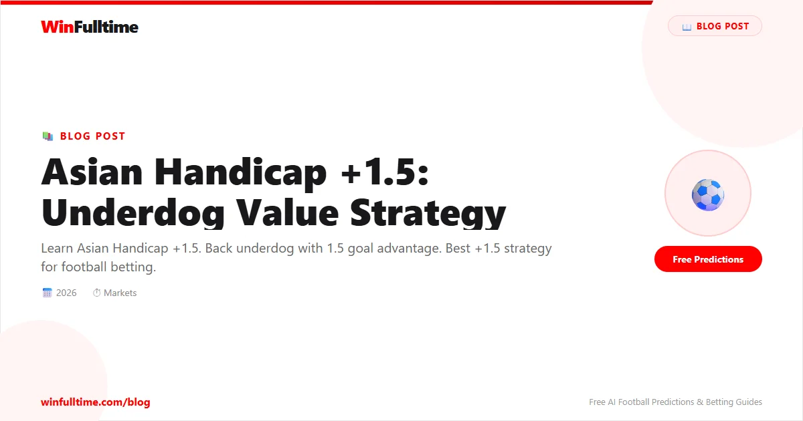

Asian Handicap +1.5 gives the underdog 1.5 goal head start. You win if they lose by 1 or win/draw. Great value on competitive underdogs.
Unlike a standard 1X2 bet where you need the underdog to win or draw, the +1.5 handicap gives you two extra goals of cushion. The only way you lose is if the underdog loses by two or more goals. This makes it a significantly safer bet than backing the underdog on the match result market, though the trade-off is shorter odds.
When you place a bet on Asian Handicap +1.5, 1.5 goals are added to the underdog's final score. For example, if the match ends 2-1 to the favourite, the adjusted score becomes 2-2.5 in favour of the underdog, meaning your bet wins. If the match ends 3-1 to the favourite, the adjusted score is 3-2.5, and you lose.
The key outcomes for a +1.5 bet are straightforward:
The +1.5 handicap is most effective in specific match scenarios. Understanding when to deploy this strategy separates profitable bettors from those who simply guess.
1. Strong home underdogs: Teams with excellent home records but poor away form often outperform expectations when playing at home. If a team has won 70% of their home matches but is priced as an underdog against a top-six side, the +1.5 handicap offers excellent value. The home crowd, familiarity with the pitch, and travel fatigue for the away team all contribute to tighter matches than the odds suggest.
2. Defensive teams: Teams that concede few goals and play structured, organised football are ideal candidates for +1.5 bets. If a team averages fewer than 1.2 goals conceded per game, they are unlikely to lose by two or more goals, even against superior opposition. Look for teams with strong defensive records and low expected goals against (xGA) metrics.
3. Derby matches: Local rivalries often produce tight, cagey matches where the gap between the teams narrows significantly. Form and quality matter less in derbies because the emotional intensity levels the playing field. Backing the underdog with a +1.5 handicap in derby matches has historically been a profitable strategy across Europe's top leagues.
4. Late-season motivation: When one team has nothing to play for and the other is fighting relegation or chasing a title, motivation can flip the expected outcome. The motivated underdog, backed with a +1.5 handicap, often overperforms because they are playing with greater urgency and desperation.
+1.5 vs Double Chance (1X): Both markets protect you against a draw, but the +1.5 also covers a one-goal defeat. The trade-off is that +1.5 typically offers shorter odds because it provides extra protection. For underdogs you expect to lose narrowly, +1.5 is often the better value bet.
+1.5 vs Draw No Bet: Draw No Bet refunds your stake on a draw, while +1.5 wins if the underdog loses by exactly one goal. The +1.5 handicap is generally more profitable because it covers more outcomes, though the odds are shorter.
+1.5 vs Over/Under 2.5: These are different markets, but they intersect when you expect a low-scoring match. If you believe the favourite will win but not by a large margin, backing the underdog with +1.5 is often more profitable than backing Under 2.5 goals.
Step 1: Identify candidates. Scan fixture lists for underdogs with strong defensive records, good home form, or motivational advantages. Teams that concede fewer than 1.2 goals per game on average are ideal candidates.
Step 2: Evaluate the odds. The +1.5 handicap should offer odds of at least 1.50 to be worth backing. Below that, the value is insufficient to justify the risk. Above 1.80, the market may be pricing in a higher probability of a heavy defeat than is warranted.
Step 3: Check the context. Consider the match context: is it a derby, a cup tie, or a late-season fixture? Motivation and atmosphere can significantly impact the likelihood of a close match.
Step 4: Stake management. Never stake more than 2-3% of your bankroll on a single +1.5 bet. Even the strongest candidates can suffer unexpected heavy defeats. For bankroll management strategies, see our bankroll management guide.
Step 5: Track and review. Keep a record of every +1.5 bet you place, including the odds, the match context, and the outcome. Review your results monthly to identify patterns and refine your approach.
Pinnacle and Sbobet offer best Asian Handicap +1.5 odds.
Catch live matches as they happen. Get golden tips and in-play alerts.
In-Play TipsGenerate optimized accumulator combinations from today's AI-powered predictions. Set your target odds and get instant ticket suggestions.
Free Ticket Builder →18+ Only • Please Gamble Responsibly
All content on WinFulltime is for informational and entertainment purposes only. Betting involves financial risk. If you or someone you know has a gambling problem, please seek professional help.